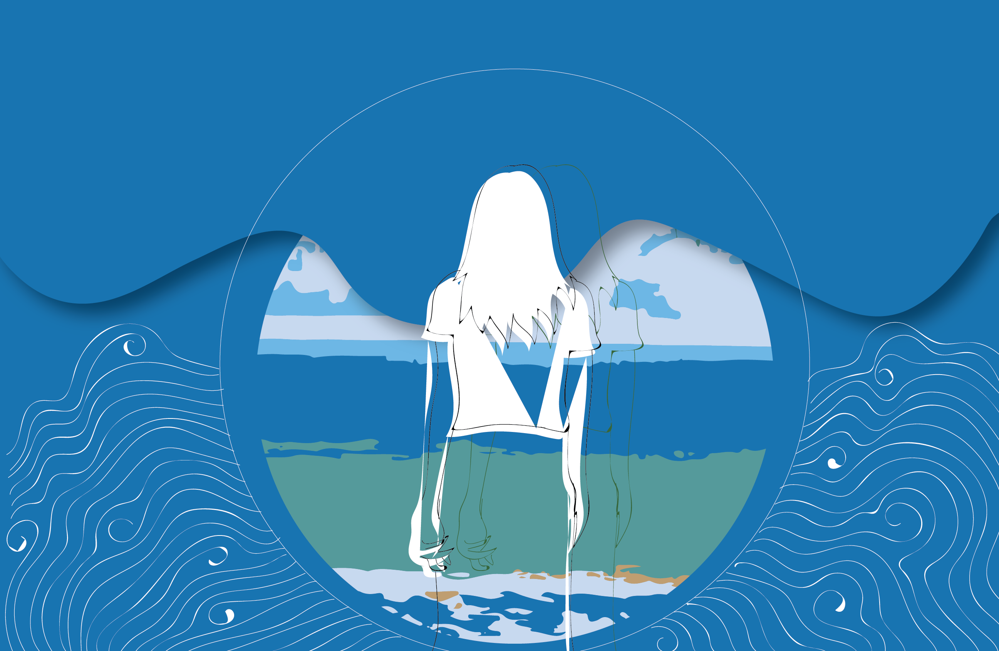
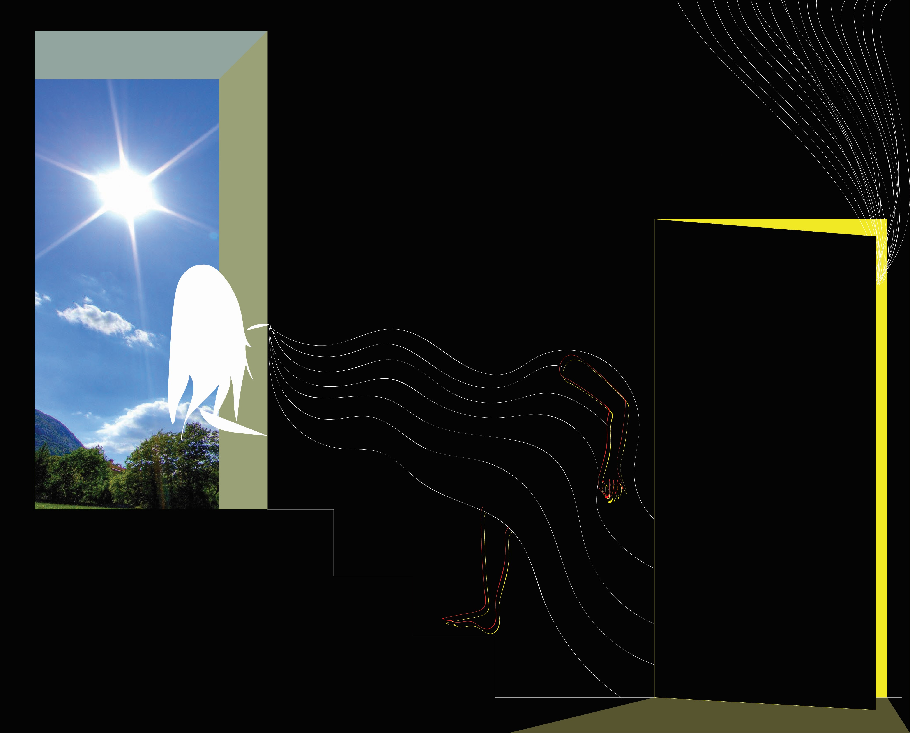

I often think about the way I am looked at, and in many ways how I look at others. It makes me think whether how I feel is in my head or the way I am made to feel. She stares, stares and stares infinetly, unconditionaly and uncontrollably.

I am pulled but I am resistant not because I have to be, but because it is a choice they make for me.

And when time is ticking I often wonder how I spend my energy on a screem. I suppose it is a part of my lifestyle. The question is am I obligated? Am I isolated? Or am I entertained? One truly knows when they de-romanticise their inner needs.

Flying or diving? Guess you will only know till you reach your end. But what they do assure you is that you will be geared and well in control of yourself and your actions. Yes, you may slip but your roots are strong and so I ask them to hold on tight.
You can see things coming at you. What is worse if it is coming for you. If you know me well, you will know that I will panic. But what is composure and patience when everything rushes over your understanding.

I googled the definition of freedom when I knew for myself that it was just one word: BRAVERY.

They told me I was on a loop. Or was I spiraling? It is true though because when I rest, I observe, and then I get back on my feet because the good old anxiety won't let me rest. I want to be in multiple places and it is exciting to know that I am somewhat there, probably just a step away.
I see light and I see darkness but they say I am mostly in the middle, not exposed to either. This one's way of finding a direction, their own journey into what may evolve into their freedom and light.

We all look back and we all revisit. It may feel safe for you but it makes me want to experience a tactile sense of my past.
Expressing low moments really helped Shannel understand herself better. She recited a few 'mantras' every other morning to remind herself of her purpose and feel further empowered. These mantras fueled her thoughts into the illustrations shown above. Try reciting these mantras to yourself and see how it helps you express your feelings.
If you would like to hear some people express their stories, go to our facebook community page, One Step Wiser, wherein you can read stories about peoples' struggles and how they get help. One Step Wiser is a community page where students from highschools in Mumbai, India, were encouraged to share their stories of struggles anonymously. School counsellors and student boards were then given the opportunity to reply to these stories in the most effective manner possible. One Step Wiser still celebrates many of these stories that can be shared and discussed amongst student bodies in thousands. Feel free to post your stories as well.